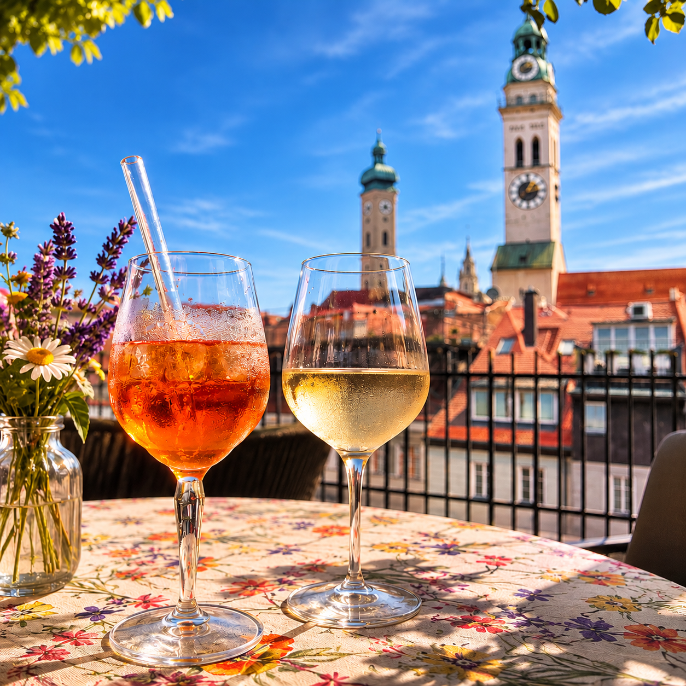

Tag 4
NIE ist ein verdammt gefährliches Wort
Es gibt Menschen, die haben einen Plan. Für ihr ganzes Leben. Die wissen schon in jungen Jahren, wo sie hinwollen, was sie erreichen möchten und wie ihr Weg dorthin aussehen soll. Sie lernen fleißig, setzen sich Ziele und haben eine klare Vorstellung davon, was als Nächstes kommt.
Ich hatte auch so einen Traum. Den durfte ich nur leider nicht verwirklichen. Aber das steht auf einem anderen Blatt Papier – oder wer weiß, wo.
Seit diesem Bruch im Leben habe ich immer das getan, was die anderen nicht wollten, dass ich tue. Ich sollte etwas mit Technik machen, habe ein Wirtschaftsabi gemacht. Ich sollte eine Lehre machen, aber ich habe mich in Richtung anderer Wege verschoben, die mir allein schon wegen ihrer Unwahrscheinlichkeit Spaß gemacht haben.
Denn ich wusste zwar nicht so genau, was ich wollte, aber immer sehr genau, was nicht. Es laut auszusprechen, ist allerdings eher gefährlich.
Ich wollte niemals in Bayern wohnen. Ich wollte niemals mit einem Bayern zusammenkommen. Und schon gar nicht in München leben. Für mich damals die Spießerstadt schlechthin.
Ich wollte hinaus in die große weite Welt. Metropolen, Wolkenkratzer, fremde Länder. Ich sah mich irgendwo zwischen internationalen Großstädten und Weltmeeren, die halbe Welt bereisend.
Eine Weile habe ich das sogar gemacht. Allerdings habe ich von der Welt nicht ganz so viel gesehen wie erhofft. Die meiste Zeit verbrachte ich in den Büroräumen irgendwelcher internationaler Offices. Auch eine Art, die Welt kennenzulernen.

Und heute?
Heute wohne ich in der totalen Pampa in Bayern. In einem Ort, der genauso gut Niederkaltenkirchen heißen könnte. Ich habe jahrelang in München gelebt, wo ich eigentlich auch nicht landen wollte.
Nie ist ein verdammt gefährliches Wort.
München ist nett, Niederkaltenkirchen auch und selbst der Franke an meiner Seite passt. Trotzdem hätte ich nichts gegen ein paar Abenteuer, die weiter weg stattfinden als auf der Schiab. Und ich glaube, genau darin liegt der Unterschied zwischen einem festen Plan und einem erfüllten Leben.